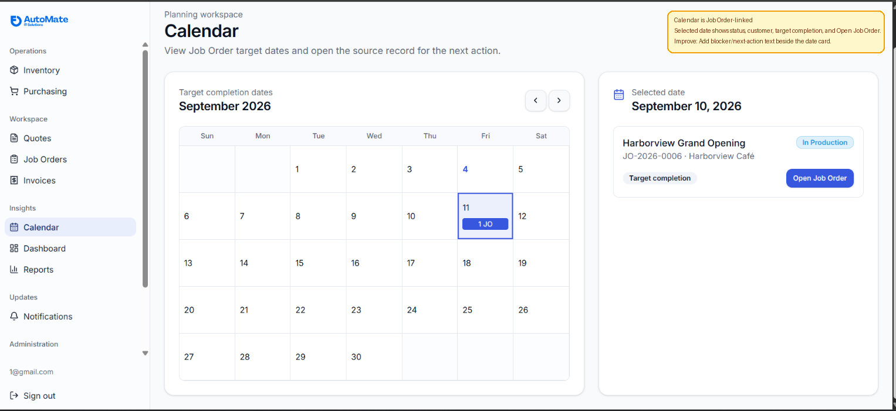
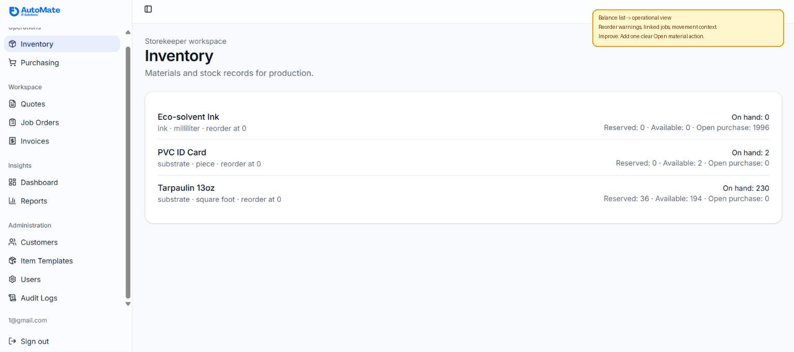
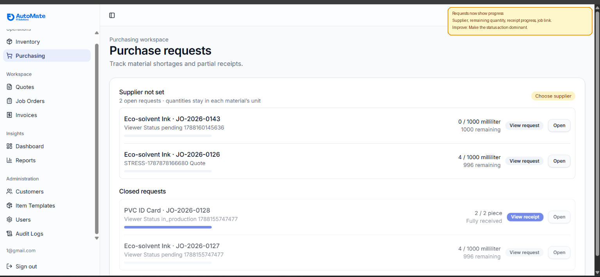
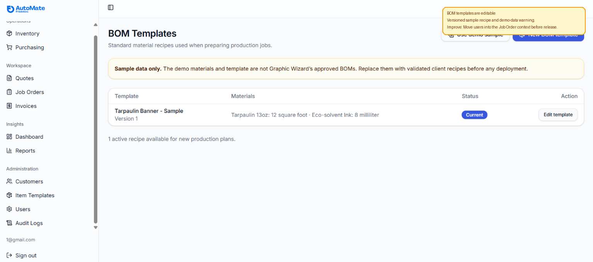

NJL Operations visual review
Annotated prototype review • Ponytail: one next action, no duplicate workflow state.
Calendar

What changed: Calendar is Job Order-linked
What was added: Selected date shows status, customer, target completion, and Open Job Order.
Smallest improvement: Add blocker/next-action text beside the date card.
Inventory

What changed: Balance list -> operational view
What was added: Reorder warnings, linked jobs, movement context.
Smallest improvement: Add one clear Open material action.
Purchasing

What changed: Requests now show progress
What was added: Supplier, remaining quantity, receipt progress, job link.
Smallest improvement: Make the status action dominant.
Production / BOM

What changed: BOM templates are editable
What was added: Versioned sample recipe and demo-data warning.
Smallest improvement: Move users into the Job Order context before release.